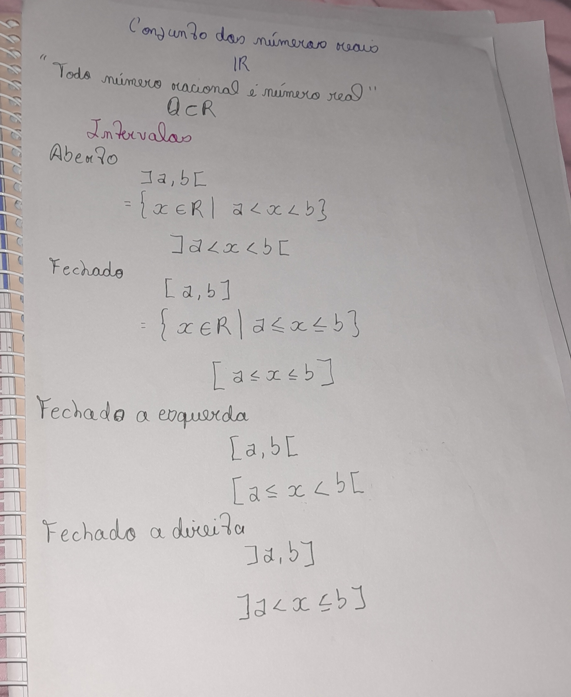
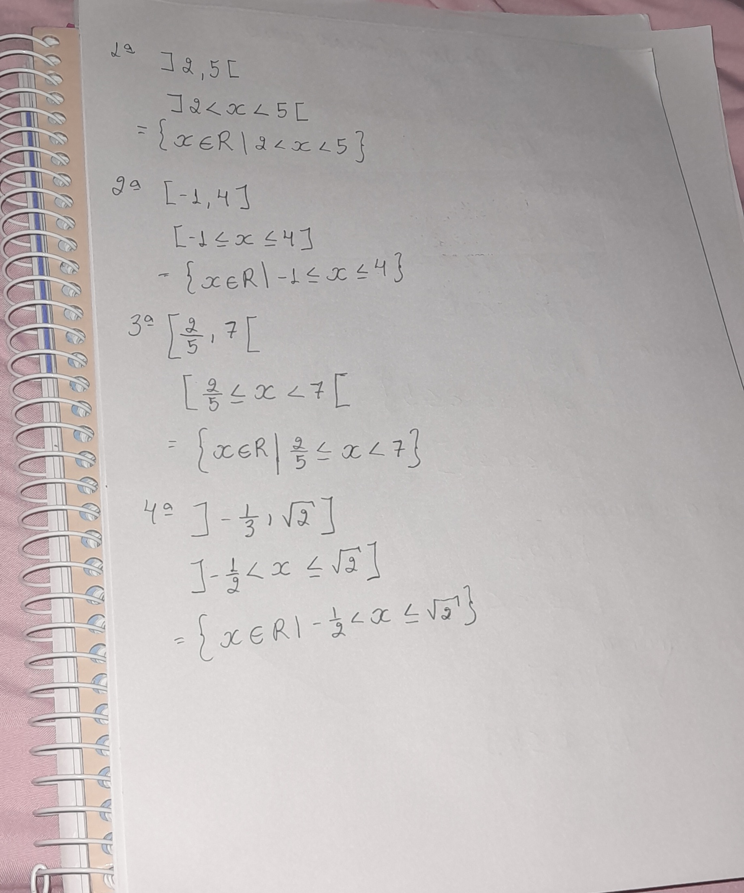
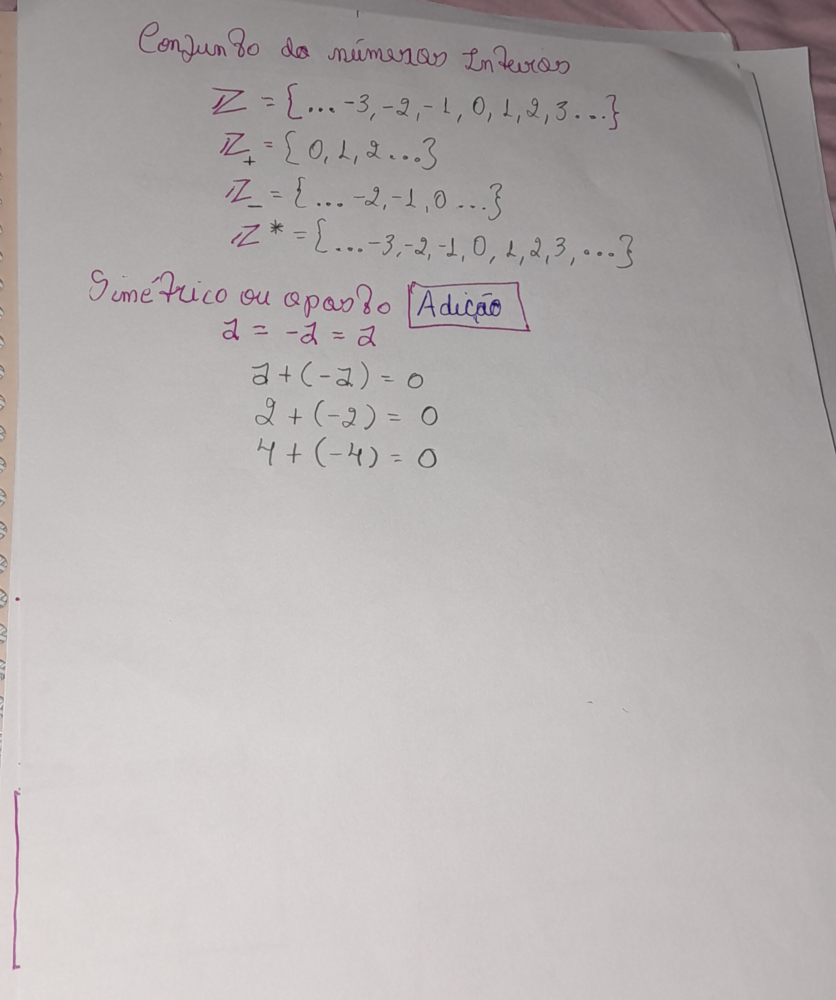
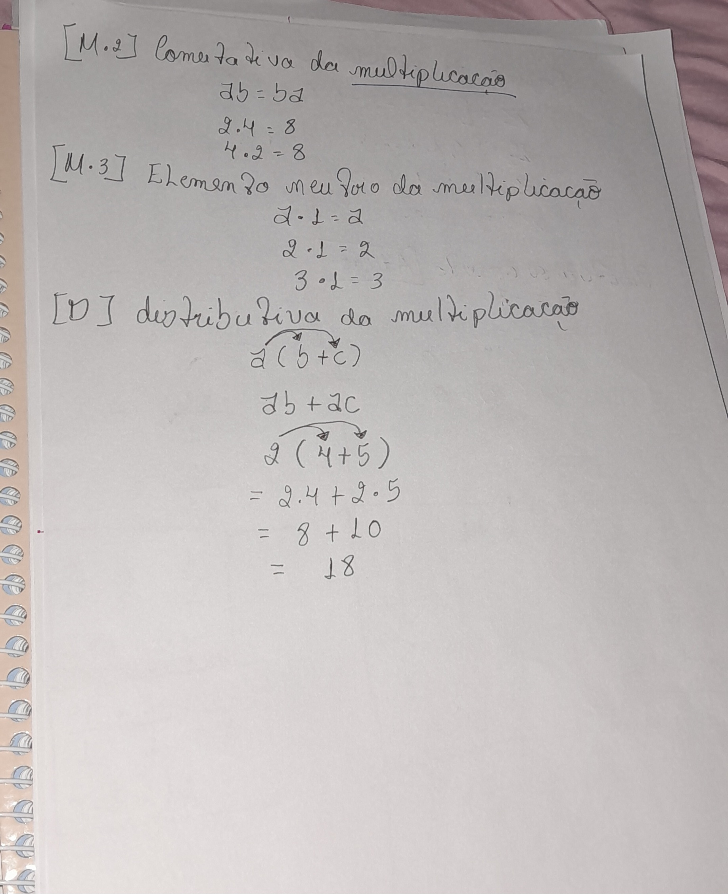
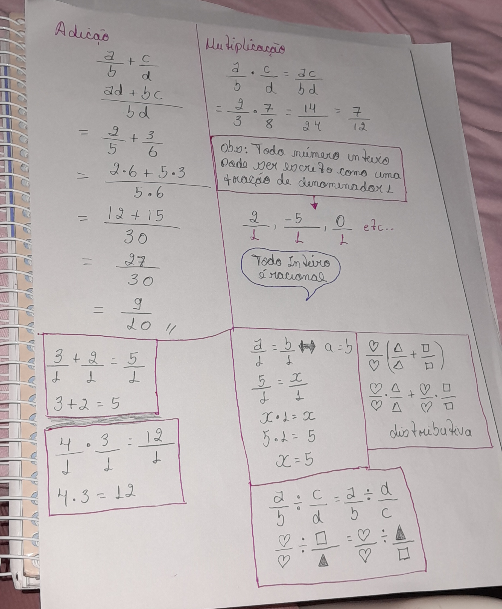
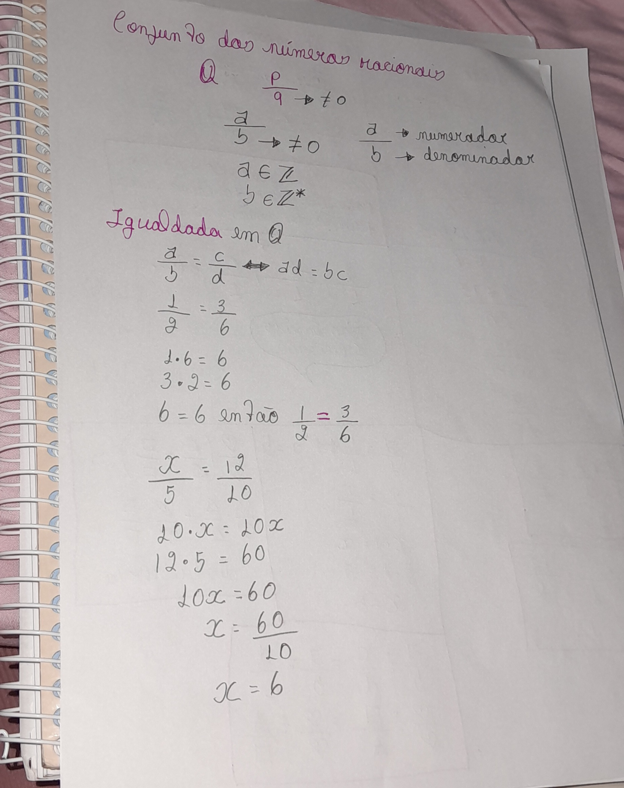
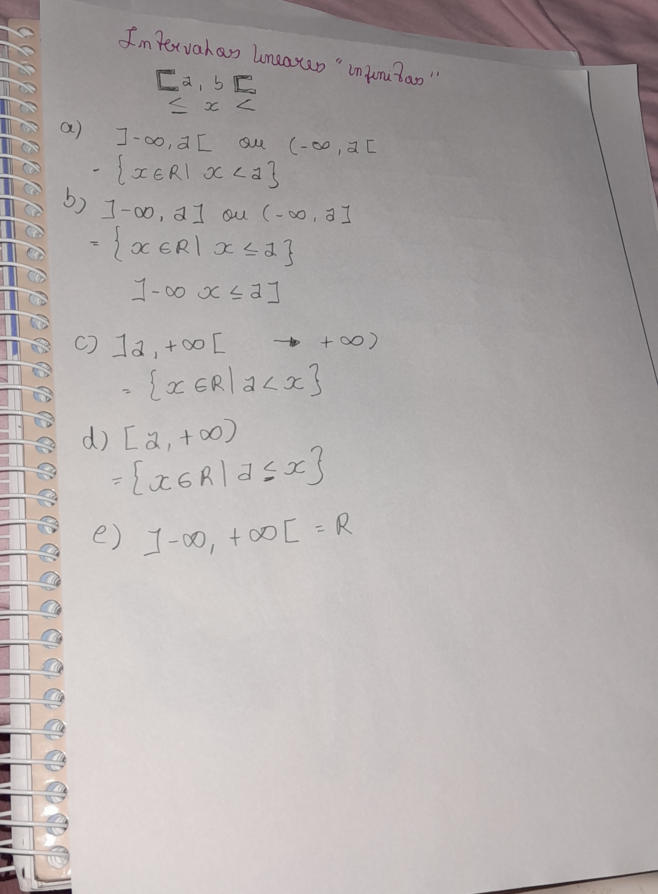

Conjuntos Numéricos
Revisão completa sobre Naturais, Inteiros e Racionais. Abaixo você encontra os slides com os resumos manuscritos e a teoria detalhada.









Use as setas para navegar entre os resumos manuscritos.
O conjunto dos números naturais é representado pelo símbolo $\mathbb{N}$. Sua representação por extensão pode ser escrita da seguinte forma: $$ \mathbb{N} = \{0, 1, 2, 3, \ldots\} $$ Um conjunto é geralmente representado por uma letra maiúscula, como $X$, enquanto seus elementos são representados por letras minúsculas e escritos dentro de chaves. As reticências $\ldots$ indicam que o conjunto possui infinitos elementos, ou seja, os números continuam indefinidamente.
Abaixo seguem as principais propriedades da adição.
Associatividade (agrupamento)
$$(a+b)+c = a+(b+c)$$
O exemplo abaixo mostra que, independentemente do agrupamento dos números, o resultado será o mesmo:
$$(4+2)+3 = 6+3 = 9$$
$$(3+2)+4 = 5+4 = 9$$
Comutatividade
$$a+c = c+a$$
O exemplo abaixo mostra que, independentemente da ordem dos números, o resultado permanece o mesmo:
$$2+0 = 2$$
$$3+0 = 3$$
Propriedades da Multiplicação
As propriedades da multiplicação seguem a mesma lógica das propriedades da adição.
Associatividade
$$(ab)c = a(bc)$$
Exemplo: percebe-se que, mesmo alterando os agrupamentos, o resultado continua o mesmo:
$$(2 \cdot 4)\cdot 3 = 24$$
$$(3 \cdot 4)\cdot 2 = 24$$
Comutatividade
$$ab = ba$$
Exemplos: o resultado permanece o mesmo, mesmo com a troca da ordem dos números:
$$2 \cdot 4 = 8$$
$$4 \cdot 2 = 8$$
Elemento neutro
Seguindo a mesma lógica do elemento neutro da adição, ao multiplicar qualquer número por um, o resultado será o próprio número:
$$a \cdot 1 = a$$
$$2 \cdot 1 = 2$$
$$1 \cdot 1 = 1$$
Propriedade Distributiva
Note que a propriedade distributiva, neste contexto, vale para a adição e a subtração:
$$a(b+c) = ab + ac$$
$$a(b-c) = ab - ac$$
Exemplos
$$2(4+5) = 2 \cdot 4 + 2 \cdot 5$$
$$2(4-5) = 2 \cdot 4 - 2 \cdot 5$$
Números Inteiros
Os números inteiros são representados pelo símbolo $\mathbb{Z}$.Sua estrutura é dada por:
$$\mathbb{Z} = \{\ldots, -3, -2, -1, 0, 1, 2, 3, \ldots\}$$
Quando queremos representar apenas os números inteiros não negativos, utilizamos:
$$\mathbb{Z}^{+} = \{0, 1, 2, 3, \ldots\}$$
Para representar apenas os números inteiros não positivos, utilizamos:
$$\mathbb{Z}^{-} = \{\ldots, -3, -2, -1, 0\}$$
Quando queremos representar o conjunto dos números inteiros sem o zero* utilizamos:
$$\mathbb{Z}^{*} = \{\ldots, -3, -2, -1, 1, 2, 3, \ldots\}$$
Simétrico (ou oposto) na adição
Para todo número inteiro $a$ pertencente a $\mathbb{Z}$, existe um número $-a$ também pertencente a $\mathbb{Z}$, tal que:
$$a + (-a) = 0$$
Dica
Todo número inteiro pode ser escrito como uma fração de denominador 1. Dessa forma, todo número inteiro é um número racional.
Exemplos:
$$ \frac{2}{1}, \quad \frac{-5}{1}, \quad \frac{0}{1} $$
A soma de números inteiros escritos na forma de fração ocorre da mesma maneira:
$$ \frac{3}{1} + \frac{2}{1} = \frac{5}{1} $$
Isso é equivalente a escrever a soma diretamente como:
$$ 3 + 2 = 5 $$
Números Racionais
Os números racionais são escritos na forma de uma fração
$$ \frac{a}{b} $$
em que a é chamado de numerador e b é chamado de denominador. O denominador deve ser diferente de zero, pois a divisão por zero não é definida. Essa é uma regra universal.
O conjunto dos números racionais é representado pelo símbolo
$$ \mathbb{Q} $$
Exemplos de números racionais:
$$ \frac{1}{2}, \quad \frac{-3}{4}, \quad \frac{5}{1}, \quad 0 = \frac{0}{1} $$
Propriedade da Adição dos Racionais
A soma de dois números racionais é dada por:
$$ \frac{a}{b} + \frac{c}{d} = \frac{ad + bc}{bd} $$
Exemplo:
$$ \frac{2}{3} + \frac{1}{4} = \frac{2 \cdot 4 + 3 \cdot 1}{3 \cdot 4} = \frac{8 + 3}{12} = \frac{11}{12} $$
Multiplicação dos Racionais
A multiplicação de dois números racionais é feita multiplicando os numeradores entre si e os denominadores entre si:
$$ \frac{a}{b} \cdot \frac{c}{d} = \frac{ac}{bd} $$
Exemplo:
$$ \frac{2}{3} \cdot \frac{4}{5} = \frac{8}{15} $$
Divisão dos Racionais
Na divisão de números racionais, é necessário ter atenção especial. Para dividir duas frações, mantém-se a primeira fração e inverte-se a segunda.
$$ \frac{a}{b} \div \frac{c}{d} = \frac{a}{b} \cdot \frac{d}{c} $$
Exemplo:
$$ \frac{3}{4} \div \frac{2}{5} = \frac{3}{4} \cdot \frac{5}{2} = \frac{15}{8} $$
Propriedade Distributiva
A multiplicação é distributiva em relação à adição e à subtração:
$$ a\left(\frac{b}{c} + \frac{d}{e}\right) = a \cdot \frac{b}{c} + a \cdot \frac{d}{e} $$
$$ a\left(\frac{b}{c} - \frac{d}{e}\right) = a \cdot \frac{b}{c} - a \cdot \frac{d}{e} $$
Exemplo:
$$ 2\left(\frac{1}{3} + \frac{1}{6}\right) = 2 \cdot \frac{1}{3} + 2 \cdot \frac{1}{6} $$
Intervalos Lineares
Os intervalos lineares representam subconjuntos da reta real. Eles indicam todos os números reais compreendidos entre dois valores.
O conjunto dos números reais é representado por:
$$ \mathbb{R} $$
Intervalo Fechado
Um intervalo fechado inclui os extremos do intervalo. Na representação gráfica, utilizamos bolinha fechada.
Na forma algébrica, usamos os símbolos menor ou igual ($\leq$) e maior ou igual ($\geq$).
Exemplo:
$$ [a,b] $$
Forma em desigualdade:
$$ a \leq x \leq b $$
Forma por compreensão:
$$ \{x \in \mathbb{R} \mid a \leq x \leq b\} $$
Intervalo Aberto
Um intervalo aberto não inclui os extremos do intervalo. Na representação gráfica, utilizamos bolinha aberta.
Na forma algébrica, usamos apenas os símbolos menor ($<$) e maior ($>$).
Exemplo:
$$ (a,b) $$
Forma em desigualdade:
$$ a < x < b $$
Forma por compreensão:
$$ \{x \in \mathbb{R} \mid a < x < b\} $$
Intervalos Semiabertos (ou Semifechados)
Existem intervalos que são fechados de um lado e abertos do outro.
Fechado à esquerda e aberto à direita
$$ [a,b) $$
$$ a \leq x < b $$
$$ \{x \in \mathbb{R} \mid a \leq x < b\} $$
Aberto à esquerda e fechado à direita
$$ (a,b] $$
$$ a < x \leq b $$
$$ \{x \in \mathbb{R} \mid a < x \leq b\} $$
Intervalos com Infinito
Os símbolos mais infinito e menos infinito indicam que o intervalo não possui limite em um dos lados.
Importante: o infinito nunca é fechado, portanto sempre usamos parênteses.
Intervalo à direita
$$ (a, +\infty) $$
$$ x > a $$
$$ \{x \in \mathbb{R} \mid x > a\} $$
Intervalo à esquerda
$$ (-\infty, b) $$
$$ x < b $$
$$ \{x \in \mathbb{R} \mid x < b\} $$
Intervalos com fechamento em um lado
$$ [a, +\infty) $$
$$ x \geq a $$
$$ \{x \in \mathbb{R} \mid x \geq a\} $$
$$ (-\infty, b] $$
$$ x \leq b $$
$$ \{x \in \mathbb{R} \mid x \leq b\} $$